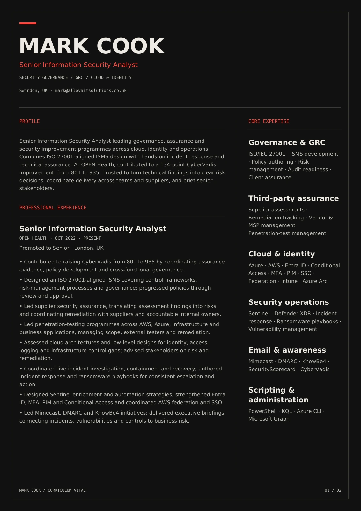
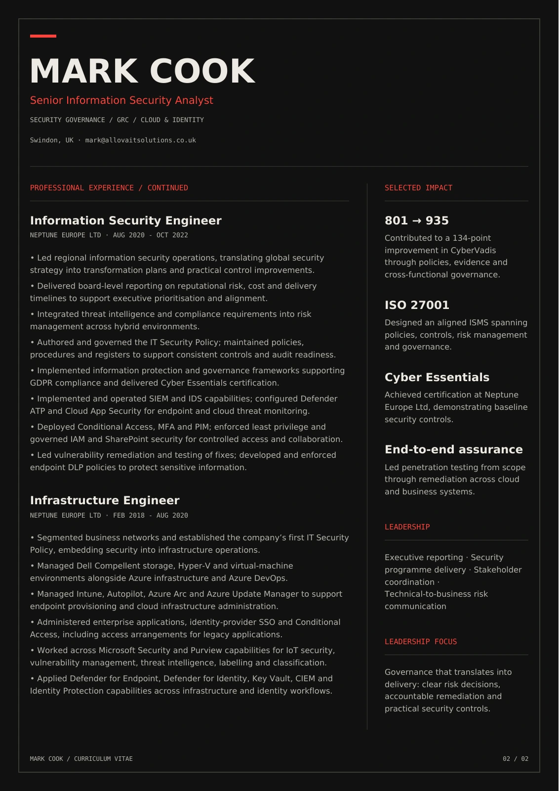

Curriculum vitae / 2026
Security governance, cloud & identity. The complete professional picture.


Read the text version
MARK COOK
Senior Information Security Analyst
SECURITY GOVERNANCE / GRC / CLOUD & IDENTITY
Swindon, UK · mark@allovaitsolutions.co.uk
MARK COOK / CURRICULUM VITAE
01 / 02
PROFILE
Senior Information Security Analyst leading governance, assurance and
security improvement programmes across cloud, identity and operations.
Combines ISO 27001-aligned ISMS design with hands-on incident response and
technical assurance. At OPEN Health, contributed to a 134-point CyberVadis
improvement, from 801 to 935. Trusted to turn technical findings into clear risk
decisions, coordinate delivery across teams and suppliers, and brief senior
stakeholders.
PROFESSIONAL EXPERIENCE
Senior Information Security Analyst
OPEN HEALTH · OCT 2022 - PRESENT
Promoted to Senior · London, UK
• Contributed to raising CyberVadis from 801 to 935 by coordinating assurance
evidence, policy development and cross-functional governance.
• Designed an ISO 27001-aligned ISMS covering control frameworks,
risk-management processes and governance; progressed policies through
review and approval.
• Led supplier security assurance, translating assessment findings into risks
and coordinating remediation with suppliers and accountable internal owners.
• Led penetration-testing programmes across AWS, Azure, infrastructure and
business applications, managing scope, external testers and remediation.
• Assessed cloud architectures and low-level designs for identity, access,
logging and infrastructure control gaps; advised stakeholders on risk and
remediation.
• Coordinated live incident investigation, containment and recovery; authored
incident-response and ransomware playbooks for consistent escalation and
action.
• Designed Sentinel enrichment and automation strategies; strengthened Entra
ID, MFA, PIM and Conditional Access and coordinated AWS federation and SSO.
• Led Mimecast, DMARC and KnowBe4 initiatives; delivered executive briefings
connecting incidents, vulnerabilities and controls to business risk.
CORE EXPERTISE
Governance & GRC
ISO/IEC 27001 · ISMS development
· Policy authoring · Risk
management · Audit readiness ·
Client assurance
Third-party assurance
Supplier assessments ·
Remediation tracking · Vendor &
MSP management ·
Penetration-test management
Cloud & identity
Azure · AWS · Entra ID · Conditional
Access · MFA · PIM · SSO ·
Federation · Intune · Azure Arc
Security operations
Sentinel · Defender XDR · Incident
response · Ransomware playbooks ·
Vulnerability management
Email & awareness
Mimecast · DMARC · KnowBe4 ·
SecurityScorecard · CyberVadis
Scripting &
administration
PowerShell · KQL · Azure CLI ·
Microsoft Graph
MARK COOK
Senior Information Security Analyst
SECURITY GOVERNANCE / GRC / CLOUD & IDENTITY
Swindon, UK · mark@allovaitsolutions.co.uk
MARK COOK / CURRICULUM VITAE
02 / 02
PROFESSIONAL EXPERIENCE / CONTINUED
Information Security Engineer
NEPTUNE EUROPE LTD · AUG 2020 - OCT 2022
• Led regional information security operations, translating global security
strategy into transformation plans and practical control improvements.
• Delivered board-level reporting on reputational risk, cost and delivery
timelines to support executive prioritisation and alignment.
• Integrated threat intelligence and compliance requirements into risk
management across hybrid environments.
• Authored and governed the IT Security Policy; maintained policies,
procedures and registers to support consistent controls and audit readiness.
• Implemented information protection and governance frameworks supporting
GDPR compliance and delivered Cyber Essentials certification.
• Implemented and operated SIEM and IDS capabilities; configured Defender
ATP and Cloud App Security for endpoint and cloud threat monitoring.
• Deployed Conditional Access, MFA and PIM; enforced least privilege and
governed IAM and SharePoint security for controlled access and collaboration.
• Led vulnerability remediation and testing of fixes; developed and enforced
endpoint DLP policies to protect sensitive information.
Infrastructure Engineer
NEPTUNE EUROPE LTD · AUG 2020 - OCT 2022
• Segmented business networks and established the company’s first IT Security
Policy, embedding security into infrastructure operations.
• Managed Dell Compellent storage, Hyper-V and virtual-machine
environments alongside Azure infrastructure and Azure DevOps.
• Managed Intune, Autopilot, Azure Arc and Azure Update Manager to support
endpoint provisioning and cloud infrastructure administration.
• Administered enterprise applications, identity-provider SSO and Conditional
Access, including access arrangements for legacy applications.
• Worked across Microsoft Security and Purview capabilities for IoT security,
vulnerability management, threat intelligence, labelling and classification.
• Applied Defender for Endpoint, Defender for Identity, Key Vault, CIEM and
Identity Protection capabilities across infrastructure and identity workflows.
SELECTED IMPACT
801 → 935
Contributed to a 134-point
improvement in CyberVadis
through policies, evidence and
cross-functional governance.
ISO 27001
Designed an aligned ISMS spanning
policies, controls, risk management
and governance.
Cyber Essentials
Achieved certification at Neptune
Europe Ltd, demonstrating baseline
security controls.
End-to-end assurance
Led penetration testing from scope
through remediation across cloud
and business systems.
LEADERSHIP
Executive reporting · Security
programme delivery · Stakeholder
coordination ·
Technical-to-business risk
communication
LEADERSHIP FOCUS
Governance that translates into
delivery: clear risk decisions,
accountable remediation and
practical security controls.
Same design. Same content. Ready to share.
↓ Download PDF